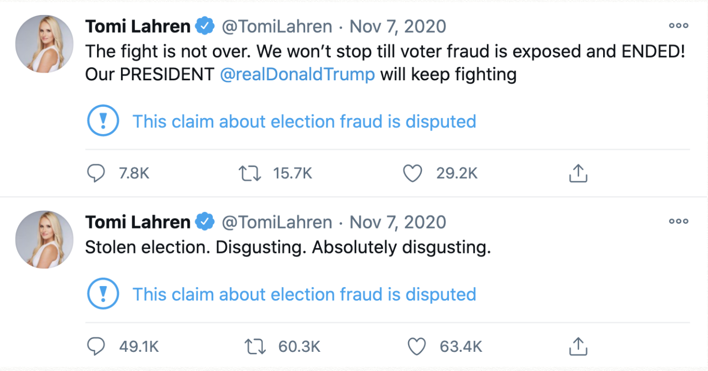
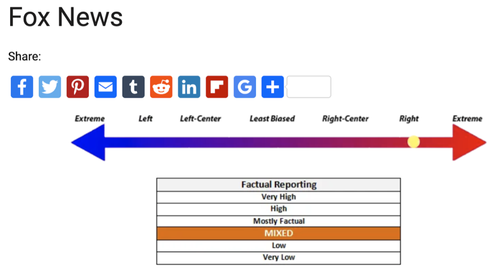
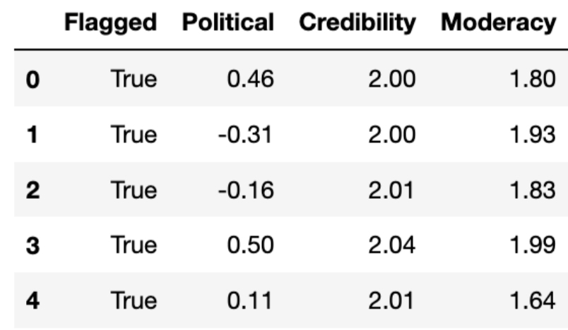

Figure 1: These are two of Tomi Lahren's flagged Tweets about voter fraud.
The spread of misinformation among social networks is a critical problem facing societies today. The world has faced rapid and widespread dissemination of misinformation through social networks. Specifically, users on Twitter and Facebook have sewn fear and mistrust regarding the US election process by spreading false information about the voting process. As well, after the election, doubt was further spread about the validity of the election based on incorrect and intentionally misleading information. With the threat that misinformation poses to societies, social networks, doubtlessly encouraged by public dismay, has sought to find ways to rein in the spread and prevalence of misinformation within their networks. Twitter in particular has developed a method of flagging tweets that contain potential misinformation as a way to inform users of the malicious content while deterring its continued spread. There is a need to understand the effects these systems are having in order to improve upon them. Specifically, are different types of users interacting with flagged tweets compared to unflagged tweets? By exploring this question, more work can be done to focus on especially vulnerable groups when designing misinformation prevention systems.
We designed a more robust and novel machine learning approach that allows us to categorize user’s polarities along a spectrum, giving us a more nuanced understanding of each user’s preferences. To train our models, we took advantage of the TweetSets data repository managed by the George Washington University which contains Twitter activity of many political and government related users, including news organizations. We curated a list of news organizations across the ideological spectrum and used the independent bias rating website Media Bias/Fact Check to assign scores regarding credibility, political bias, and moderacy for each news organization. See Figure 1 for an example of the rating system used by Media Bias/ Fact Check. For the political polarity dimension we assigned a political polarity score as follows: -3:Extreme Left, -2:Left, -1:Center Left, 0:Least Bias, 1:Center Right, 2:Right, and 3:Extreme Right. Likewise for the credibility dimension we assign a score using the factual reporting section of Media Bias/ Fact Check, as follows: 0:Very Low, 1:Low, 2:Mixed, 3:Mostly Factual, 4:Highly Factual, and 5:Very Highly Factual. Lastly, the moderacy score is calculated by: 0:Least Bias, 1:Left Center, Right Center, 2:Left, Right, and 3:Extreme. A breakdown of the scoring system is seen in Table 1. With these scores, we then get an accurate sense of how liberal or conservative, credible or not credible, and moderate or extreme a news organization is, which we will assume is reflected in the content of that organization’s tweets, which we had obtained from TweetSets.
 Figure 2: An example of the rating system used by Media Bias/ Fact Check for Fox News.By defining a process for quantitatively understanding a user along three dimensions: science (pro-science vs anti-science), political (conservative vs liberal), and moderacy (hardline vs moderate), we perform an analysis to understand the characteristics of the community of users that interact with flagged tweets versus unflagged tweets.We combine two concepts of defining a user's polarity to give us a comprehensive three dimensional polarity score. We then conduct an analysis on the differences and similarities of a community of users that interacted with unflagged tweets and a community that interacted with flagged tweets. We are then able to understand how misinformation flags change the makeup of the users who interact with flagged tweets. In Echo Chambers Surrounding Misinformation on Twitter, researchers developed a methodology for calculating a users polarization, i.e. whether they tend to like misinformation [1]. This concept of polarity allowed the researchers to analyze echo chambers surrounding COVID-19 misinformation. In our work we adopt the use of a hashtag analysis that these researchers defined in order to give our users a three dimensional polarity score, an idea designed by Rao et al. in Political Partisanship and Anti-Science Attitudes in Online Discussions about Covid-19. While Rao et al. use more sophisticated techniques in order to define polarities, we adopt their three dimensional polarity score along with the hashtag analysis approach used in Echo Chambers Surrounding Misinformation on Twitter. Generally, we use an analysis of hashtags to define a users attitudes, rather than a more intensive, yet more lengthy, process of a text analysis on a users tweet content. We find that our approach works well and some results are able to be confirmed intuitively. Using these three dimensional polarity scores, we then conduct our analysis regarding the change of community characteristics between flagged tweets and unflagged tweets.
| MBFC Bias Rating | Assigned Political Rating | MBFC Factual Rating | Assigned Credibility Rating | MBFC Moderacy Rating | Assigned Moderacy Rating |
|---|---|---|---|---|---|
| Extreme Left | -3 | Very Low | 0 | Extreme Left | 3 |
| Left | -2 | Low | 1 | Left | 2 |
| Center Left | -1 | Mixed | 2 | Center Left | 1 |
| Center | 0 | Mostly Factual | 3 | Center | 0 |
| Center Right | 1 | High | 4 | Center Right | 1 |
| Right | 2 | Very High | 5 | Right | Extreme Right |
| Extreme Right | 3 | Extreme Right | 3 |
Continuing the methodology, a tweet history for each news organization was downloaded from the TweetSets repository and then hydrated. The term, hydrated, is a term referring to using an ID number to download a tweet’s full information, into full tweets. Once hydrated, every tweet from an organization is assigned a score for each of the three dimensions using the system we laid out above. We then extract only the tweet text for every tweet and we use every tweet as the instances making up our training set and the polarity scores being our three targets when training three separate classifiers. We split the dataset into training and testing portions and used a TF-IDF vector representation of every tweet’s text as the dependent variable. We then trained three separate Naive Bayes models for each dimension and achieved accuracy scores of place here.
Our team then collected a sample of flagged and unflagged tweets from the users Tomi Lahren, Eric Trump, Donald Trump Jr, Rudy Guiliani, Adam Laxalt, Maria Bartimoro, and Paduch. These users were chosen because they each have several flagged tweets surrounding the events of the January 6th riot at the U.S. Capitol and the 2020 U.S. election. We focus on these two events as they are relatively recent and Twitter was very active in flagging misinformation around the two events. However, we do note that the flagged tweets have a general right leaning skew due to the political nature of the two events. This is somewhat unavoidable as Twitter’s API does not have a property for detecting flagged tweets, thus it is difficult to construct a randomly sampled set of flagged tweets. For our initial study, using only the 7 users we outlined will be sufficient as it will still give us an understanding of whether there is a change in the type of user that is interacting between flagged tweets and unflagged tweets. Since we are focusing on users within a similar ideology, we assume that the change in the types of users engaging in flagged and unflagged tweets will be somewhat similar across the several different users. Our study is thus particularly focused on how flagged and unflagged right wing tweets differ in types of users that are retweeting the information.
 Figure 3. This is a screenshot of the average polarity score for every user and whether they retweeted a flagged or unflagged Tweet.Furthermore, for each flagged tweet selected we chose an unflagged tweet that was tweeted relatively close in time to the flagged tweet, i.e. within a few days, and from the same user. This is to prevent large changes in the makeup of the followers of the users that we selected above. We then collected up to 100 users, as permitted by the Twitter API, that retweeted the original tweets. This came out to be 669 users in total. Using Tweepy, we downloaded the history of their tweet timelines. We extracted only the text of their tweets and then ran every tweet through each of our respective models. For every user, we averaged each predicted polarity score for every one of their tweets from our three different models, thus giving us our three scores. The outcome of this can be seen in Figure 3, where every row is a user and the Flagged column indicates whether that user retweeted a flagged or unflagged tweet. Using this methodology we are able to get a more substantial and non-biased idea of a user’s scores along the political, credibility, and moderacy dimensions, thus allowing us to perform our analysis.
Our analysis focused on detecting if there were any significant differences between the group of users who retweeted a flagged tweet and the group who retweeted unflagged tweets. We first do a simple exploratory analysis comparing the distributions of the two groups along each of the three dimensions. We then conduct a series of permutation tests to detect if there are statistically significant differences between the two groups. Beginning with analysis of the political polarization scores, note in Figure 4, that the distribution of polarization scores from the flagged group actually appears slightly more to the left, indicating a more liberal polarization score than the users who retweeted the unflagged tweets. We also note for the flagged distribution that there is a hump on the right side of the normal curve, indicating a jump in users with a more right leaning polarization score. Both plots show a long right tail stretching to the upper extreme right end of the polarization score, something we would expect given the right leaning nature of the tweets we are examining. The results of the permutation test, run between the two groups of users and their political polarization scores, confirms what we see in the graph, that the political polarization of users retweeting the flagged post is significantly more liberal than the group of users retweeting the unflagged posts. This result is unexpected, as the flagged tweets were all aligned with right wing talking points, such as claiming fraud regarding the 2020 election. The evidence suggests that flagging, at least right leaning tweets, has a more complicated outcome than just attracting further right wing users, an outcome we ourselves predicted. Possible explanations for this are explored more thoroughly in the Discussion section.
Figure 4. This graph displays the distribution of political polarization scores. Figure 5. This graph displays the distribution of moderacy polarization scores. Figure 6. This graph displays the distribution of credibility polarization scores.In Figure 5, comparing the distributions of the moderacy scores, we note a similar trend to the political distributions. The group of users retweeting the flagged tweets show a tendency to be more moderate, rather than extreme. This is somewhat the opposite of the result we would expect. We would expect that only the most extreme users are the ones retweeting tweets that have been flagged. The visual trend is further validated with a permutation test indicating that the group of users retweeting the flagged tweets are indeed more moderate than those retweeting unflagged tweets. However, the users retweeting unflagged posts actually show a larger tail on the right side, indicating more extreme users are retweeting the unflagged tweets. We do not necessarily suggest that flagged posts are deterring the most extreme users, only that the evidence suggests they are attracting more moderate users. Combining the outcome of the permutation test for the political dimension with the outcome for the moderacy dimension paints a clearer picture of the effect of the flags. The data suggests that more moderate, center left to left wing users are the ones actually being drawn to and retweeting flagged posts from right wing political figures. However, we do not see this trend continue along the credibility dimension. For credibility, as can be seen in Figure 6, the two groups share very similar distributions of scores and a permutation test validates that suspicion. This outcome is worrying in and of itself as it possibly suggests that while flags are causing a difference in users along a political and moderacy dimension, users show no change in their preference for credible information, hinting that there may be some confusion among users as to what information is actually credible. Without speculating too far, we wonder whether this points to a greater crisis brewing on social media, a blurring of lines between credible information and misinformation.
With the observed results it is difficult to say whether Twitter’s misinformation flags prove to be effective or not. Undoubtedly, more research needs to be done. However, we can say that if our findings can be extrapolated across the entirety of the unobserved retweeters that we could not access, then it is likely that the misinformation flags proved somewhat useful in breaking down echo chambers around right wing misinformation. The following assumption would need to be validated, for instance through the sentiment analysis we outlined above. We speculate that the more liberal and moderate users retweeting flagged tweets are most likely doing so in a ridiculing way. With this in mind, then the misinformative nature of the tweets is being shared among communities of users that are more skeptical and critical of the information they are viewing. Thus, it is likely that the flagged tweets sparked more debate and scrutiny compared to unflagged tweets, a positive outcome. We are hopeful that this increase of debate would help users who traditionally consume extreme information unchecked be prompted to have to defend their views, whether externally against other Twitter users or internally with themselves. We do not express the opinion that these misinformation flags are the end all for preventing the spread of misinformation, but we acknowledge that there is evidence suggesting misinformation flags can lead to the breakdown of echo chambers and hopefully greater dialogue between users of different polarizations. We thus hope our research helps better understand and contributes to the prevention of the spread of misinformation on social media.